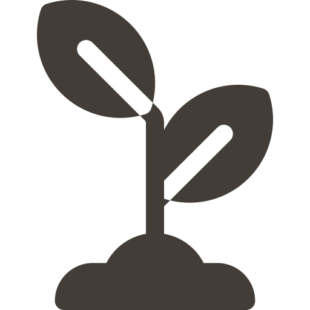

<mat-icon class="close-dialog-icon" (click)="dialogRef.close()">close</mat-icon>
<div class="add-plant-dialog" fxLayout="column">

    <div fxFlex="100" fxLayout="row" fxLayoutAlign="space-between center">
        <h2 class="page-header">{{newPlant.commonName ? newPlant.commonName : 'New Plant'}}</h2>
    </div>
    <div class="add-plant-scroll-container">
        <form>
            <div *ngIf="step === 0" class="add-plant-scroll-contents" fxLayout="column">
                <mat-form-field>
                    <input matInput placeholder="Common Name" name="commonName" [(ngModel)]="newPlant.commonName" [required]="newPlant?.botanicalName?.length === 0">
                </mat-form-field>
                <mat-form-field>
                    <input matInput placeholder="Botanical Name" name="botanicalName" [(ngModel)]="newPlant.botanicalName">
                </mat-form-field>
                <mat-form-field>
                    <mat-select required placeholder="Plant Type" name="type" [(ngModel)]="newPlant.type">
                        <mat-option value="Cactus">
                            Cactus</mat-option>
                        <mat-option value="Flower">Flower</mat-option>
                        <mat-option value="Fruit">Fruit</mat-option>
                        <mat-option value="Grain">Grain</mat-option>
                        <mat-option value="Grass">Grass</mat-option>
                        <mat-option value="Herb">Herb</mat-option>
                        <mat-option value="Houseplant">Misc Houseplant</mat-option>
                        <mat-option value="Shrub">Shrub</mat-option>
                        <mat-option value="Succulent">Succulent</mat-option>
                        <mat-option value="Tree">Tree</mat-option>
                        <mat-option value="Vegetable">Vegetable</mat-option>
                        <mat-option value="Vine">Vine</mat-option>
                    </mat-select>
                </mat-form-field>

                <mat-form-field>
                    <mat-select required placeholder="Life Cycle" name="lifeType" [(ngModel)]="newPlant.lifeType">
                        <mat-option value="Annual">Annual</mat-option>
                        <mat-option value="Perennial">Perennial</mat-option>
                        <mat-option value="Biennial">Biennial</mat-option>
                    </mat-select>
                </mat-form-field>
                <div fxFlex="100">
                    <mat-hint fxFlex="50">Does it produce something to harvest?</mat-hint>
                    <mat-slide-toggle fxFlex="20" [(ngModel)]="newPlant.harvestable" name="harvestable" class="toggle">{{ newPlant.harvestable ? 'Yes' : 'No' }}</mat-slide-toggle>
                    <mat-form-field fxFlex="30" *ngIf="newPlant.harvestable === true">
                        <input matInput type="number" placeholder="Weeks until harvest" name="weeksToHarvest" [(ngModel)]="newPlant.weeksToHarvest" required>
                    </mat-form-field>
                </div>
            </div>

            <div *ngIf="step === 1" class="add-plant-scroll-contents" fxLayout="column">
                <mat-form-field>
                    <mat-select required placeholder="Sun Schedule" name="sunSchedule" [(ngModel)]="newPlant.sunSchedule">
                        <mat-select-trigger>
                            <span *ngIf="newPlant.sunSchedule === 'Full Sun'"><mat-icon>brightness_high</mat-icon> Full Sun</span>
                            <span *ngIf="newPlant.sunSchedule === 'Partial Sun'"><mat-icon>brightness_low</mat-icon> Partial Sun</span>
                            <span *ngIf="newPlant.sunSchedule === 'Partial Shade'"><mat-icon>brightness_medium</mat-icon> Partial Shade</span>
                            <span *ngIf="newPlant.sunSchedule === 'Full Shade'"><mat-icon>wb_cloudy</mat-icon> Full Shade</span>
                        </mat-select-trigger>
                        <mat-option value="Full Sun">
                            <mat-icon>brightness_high</mat-icon> Full Sun</mat-option>
                        <mat-option value="Partial Sun">
                            <mat-icon>brightness_low</mat-icon> Partial Sun</mat-option>
                        <mat-option value="Partial Shade">
                            <mat-icon>brightness_medium</mat-icon> Partial Shade</mat-option>
                        <mat-option value="Full Shade">
                            <mat-icon>wb_cloudy</mat-icon> Full Shade</mat-option>
                    </mat-select>
                </mat-form-field>
                <mat-form-field *ngIf="isSaveToGarden">
                    <mat-select required placeholder="Plant Stage" name="stage" [(ngModel)]="newPlant.stage">
                        <mat-option value="0">Seed</mat-option>
                        <mat-option value="1">Sproutling</mat-option>
                        <mat-option value="2">Young Plant</mat-option>
                        <mat-option value="3">Mature Plant</mat-option>
                    </mat-select>
                </mat-form-field>
                <mat-form-field>
                    <input matInput placeholder="Variety of {{newPlant.commonName ? (newPlant.commonName | titlecase) : (newPlant.botanicalName | titlecase) }}" name="variety" [(ngModel)]="newPlant.variety">
                </mat-form-field>
                <mat-form-field>
                    <input matInput placeholder="Comment" name="comment" [(ngModel)]="newPlant.comment">
                </mat-form-field>

                <div fxFlex="100" fxLayoutAlign="end center">
                    <a (click)="onNextStep()">Advanced Settings ></a>
                </div>
            </div>

            <div *ngIf="step === 2" class="add-plant-scroll-contents" fxLayout="column">
                <h3>Advanced Settings</h3>
                <mat-form-field>
                    <input matInput type="number" placeholder="# of weeks before last frost date to sow the seeds" name="weeksToSowBeforeLastFrost" [(ngModel)]="newPlant.weeksToSowBeforeLastFrost">
                </mat-form-field>
                <mat-form-field>
                    <input matInput type="number" placeholder="Length of germination period (in weeks)" name="germEnd" [(ngModel)]="newPlant.germEnd">
                </mat-form-field>
            </div>
        </form>
    </div>

    <mat-dialog-actions fxFlex="100" fxLayoutAlign="end center">
        <mat-checkbox [(ngModel)]="isSaveToGarden">Save to Garden</mat-checkbox>

        <button mat-button color="primary" (click)="dialogRef.close()" *ngIf="step === 0">Cancel</button>
        <button mat-button color="primary" (click)="onPreviousStep()" *ngIf="step !== 0">< Back</button>
        <button mat-raised-button color="primary" (click)="onNextStep()" *ngIf="step !== 1 && step !== 2" [disabled]="(!newPlant.commonName && !newPlant.botanicalName) || !newPlant.type || !newPlant.lifeType || (newPlant.harvestable === true && !newPlant.weeksToHarvest)">Next ></button>
        <button mat-raised-button color="primary" (click)="onSubmit()" *ngIf="step === 1 || step === 2" [disabled]="!newPlant.sunSchedule || !newPlant.stage">Submit</button>
    </mat-dialog-actions>
</div>